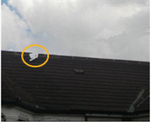
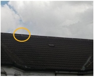

的 橡皮擦 工具允许您从现有绘制笔划中移除像素。
| 1。 | 在查看器顶部的 RotoPaint 工具设置中设置不透明度、画笔类型、画笔大小和画笔硬度。(有关可用选项的信息，请参见 选择现有笔划/形状进行编辑 )。 |
| 2. | 或者，在 RotoPaint 工具设置中设置笔画的寿命。(有关可用选项的信息，请参见 选择现有笔划/形状进行编辑 )。 |
| 3. | 右键单击 画笔 在 RotoPaint 工具栏中选择 橡皮擦 工具 . |
| 4. | 根据需要应用笔画。如果绘制了多个笔划，也可以擦除多个笔划。 |
|
 |
 |
| 不需要的油漆笔画。 |
使用橡皮擦工具
移除不需要的油漆 笔画。 |
提示: 如果你使用的是图形平板电脑, Nuke 使用笔的擦除端时，自动切换到橡皮擦模式。
|
|